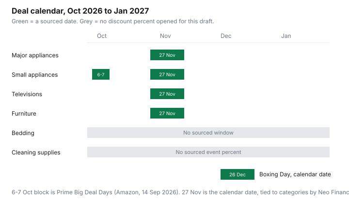

Household Items and Supplies · Canada
Black Friday vs Boxing Day in Canada: When to Buy Appliances, Vacuums, and Household Gear
Boxing Day is a habit. It is not, by itself, the best day to buy a fridge. The Canadian calendar that matters for household gear runs from an October member event through Black Friday week, Boxing Day, and whatever is left in January. This guide dates the events that were actually scheduled or reported, and it refuses discount percentages that no source stated. A sale is real when the model number you want is cheaper than the price you already wrote down.
Disclosure: Cash-back portals for online household orders are an offer type. Saving Optimizer may earn a commission if we later add a partner link. We do not currently claim a portal partnership. Education only. Nothing here tells you to buy on a given day.
Key takeaways
- Amazon.ca Prime Big Deal Days 2026 is 6–7 October, starting 6 October at 12:01 a.m. Pacific, for Prime members. Amazon Staff, 14 Sep 2026.
- Black Friday 2026 falls on 27 November. Boxing Day is 26 December. Those are calendar dates. They are not a measured percent off.
- Neo Financial’s 24 Nov 2025 article, quoting Rakuten Canada, puts appliances, televisions, and furniture on the Black Friday door-crasher list, and fitness gear, jewellery, and accessories on Boxing Day.
- Best Buy’s online policies, text retrieved 26 Sep 2026, exclude Black Friday, Cyber Monday, and Boxing Day prices from the low-price guarantee.
- January clearance has no discount percentage in the sources opened for this draft. Compare it to the November price you saved.
The Canadian household-deal calendar: October, November, December, and January
October has one household date this draft can pin to a primary page. Amazon Staff, writing on aboutamazon.ca on 14 September 2026, said Prime Big Deal Days returns on 6–7 October 2026, 48 hours, starting 6 October at 12:01 a.m. Pacific time, for Prime members. The post names kitchen and home brands including Ninja, Dyson, Shark, KitchenAid, and Bissell, among many others. Naming a brand is not a promise of a discount size, and it is not a promise that every model of that brand is in the event. Whether a Prime membership is worth holding for two days is the annual-versus-monthly Prime guide. Do not add a membership you will not use in order to chase a vacuum.
Black Friday 2026 is Friday 27 November, the day after U.S. Thanksgiving on Thursday 26 November 2026. Cyber Monday 2026 is 30 November. Boxing Day is 26 December, and the shopping days after it are what retailers call Boxing Week. Neo Financial’s article of 24 November 2025, written for that year’s season, said Black Friday and Cyber Monday officially fell on 28 November 2025 and had become a month-long period, “even bigger than Boxing Day,” with a Retail Council of Canada figure that 84 percent of respondents called Black Friday the most important shopping day. The same article says an October “Black Friday” soft launch often follows Canadian Thanksgiving, and that the strongest BFCM offers typically arrive in November. Treat that as a 2025 report of the pattern, commonly reported by Neo Financial via the Retail Council and via Jennifer LaForge of Rakuten Canada. It is not a 2026 audit of tags.
January is clearance season in the ordinary sense that stores still have units after Christmas. No source opened for this draft published a January appliance discount percentage. If you need the machine in December, January is not a plan. If you can wait, save the November price and make January beat it on the same model.
Major appliances: why November often beats Boxing Day (and when clearance wins)
LaForge, in the Neo Financial piece published 24 November 2025, puts “big-ticket items like televisions, gaming consoles, laptops, appliances, mobile phone plans, furniture and mattresses” on Black Friday. She puts Boxing Day’s best discounts, in that interview, on fitness equipment, jewellery, and accessories, because those categories turn over with trends. That is the sourced reason November is the first place to look for a major appliance, and Boxing Day is not the default. “Often” here means “commonly reported by that 24 November 2025 article,” not a count of 2026 flyers.
Clearance wins when the unit in front of you is the model you already specced, the price is below the November price you saved, and you can take it. It loses when the cheap unit is a different capacity, a display with no serial match to the boxed goods, or a colour the household will not keep. Running cost is still the EnerGuide label. A hundred dollars off a thirsty fridge can be gone in electricity. A tariff on a U.S.-origin import is a separate check on the counter-tariff guide, not a reason to grab the first November tag.
Small appliances and vacuums: doorbusters vs everyday lows
The 14 September 2026 Amazon post is the October evidence for small appliances and vacuums, because it names Dyson, Shark, Bissell, Ninja, and KitchenAid inside Prime Big Deal Days. Again, that is a brand list for a member event, not a percent. LaForge’s Black Friday list includes appliances without separating “small” from “major.” Use both windows: look in the 6–7 October event if you already have Prime, and look again on Black Friday week at the model number you wrote down. An everyday low that you have seen for months is not beaten by a doorbuster photo of a different model.
Neo Financial describes door-crashers as limited stock, often available for one day or part of a day. That is a stock warning from a 24 November 2025 article, not a finding that Canadian vacuum doorbusters are inferior machines. Open the model number. If it matches the vacuum you compared on EnerGuide and on the repair terms, the doorbuster is that vacuum at that price. If the model number is one you have never seen, you are buying a different product. Do not let the word “doorbuster” do the comparison.
How to tell a real sale: price history and 'was' price checks
Two weeks before you intend to buy, save the current price of the exact model from the retailer you will use, and from one other Canadian seller if you can. A flyer screenshot is useful when the store’s policy accepts flyers. How flyers are organized is the Flipp system guide. On the event day, the sale is the gap between your note and the new tag, on that model, in stock, in Canadian dollars, before you add delivery.
A “was” price on a sign is the retailer’s claim about an earlier price. This draft did not open a Competition Bureau file or a price-history study that counted how often those claims are wrong. Your own note is the check you control. If you have no note, you do not know. Bruce Winder, quoted in the same Neo Financial article, said high-margin categories are where deeper discounts show up, and used beauty as the example of a deep cut and tech as the example of a shallower one. That is a 2025 analyst comment, not a 2026 appliance percent. The Deloitte 2025 Holiday Retail Survey, as summarized in that article, said most people planned to spend about 10 percent less than the year before. That is a spending plan in a survey, not a discount you will see on a fridge.
Stack with price adjustment and price match windows
A sale price and a later refund of the difference are different tools. Best Buy Canada’s Low Price Guarantee, in text retrieved 26 September 2026, matches a lower price from an authorized Canadian dealer before you buy or within 30 days, and refunds its own price drop within 30 days of purchase on the original receipt. My Best Buy account holders are given 60 days on that page, same conditions. The Online Policies page retrieved the same day says the guarantee does not apply to Black Friday, Cyber Monday, and Boxing Day prices, or to marketplace sales, clearance, coupons, and rebates, among other exclusions. A direct open of those Best Buy URLs was blocked on 26 September 2026, so re-read them before you rely on a window. The holiday help page “Making Sure You Get the Best Price” points back to the same low-price guarantee rather than publishing a separate holiday percent.
Home Depot Canada’s price-guarantee page, read 26 September 2026, will match a current lower price at purchase, with exclusions, and will adjust a major appliance for 30 days only if Home Depot’s own price drops, not a competitor’s. Costco, Canadian Tire, Walmart, and Staples are in the price-adjustment guide and the price-match guide. A cash-back portal on an online order, if you use one, is an offer type in the disclosure. It does not extend a retailer’s window. A charge that keeps billing after a “deal” membership is the hidden-charge guide, not part of the appliance price.
Category timing table and an SVG deal-calendar chart
| Category | Window to check | Dated evidence | Tip |
|---|---|---|---|
| Major appliances | Black Friday week (27 Nov 2026) | Commonly reported by Neo Financial / LaForge, 24 Nov 2025, as Black Friday door-crashers | Save the model’s price in early November. Boxing Day is not the default on that source |
| Small appliances and vacuums | 6–7 Oct 2026, then Black Friday week | Amazon Staff, 14 Sep 2026, names Dyson, Shark, Bissell, Ninja, KitchenAid for Prime Big Deal Days. LaForge includes appliances on Black Friday | Match the model number. A named brand is not a percent off |
| TVs | Black Friday week | Commonly reported by LaForge, 24 Nov 2025, on the Black Friday list | Best Buy’s retrieved policy excludes Black Friday prices from its guarantee |
| Furniture | Black Friday week | Commonly reported by LaForge, 24 Nov 2025, on the Black Friday list | Confirm country of origin if the 8 Sep 2026 tariff list matters for that item |
| Bedding | No sourced window in this draft | Not on the LaForge lists quoted above | Use your own price note. Do not borrow the appliance calendar |
| Cleaning supplies | No sourced event window in this draft | No dated percent opened for this page | Unit price and a two-to-three-month hold, on the supplies-audit guide |

Sources & date stamps
- Amazon Staff, aboutamazon.ca, 14 Sep 2026, read 26 Sep 2026: Prime Big Deal Days on 6–7 Oct 2026, from 12:01 a.m. PT on 6 Oct, Prime members, 48 hours. Brand names include Ninja, Dyson, Shark, KitchenAid, and Bissell.
- Neo Financial, Carli Whitwell, published 24 Nov 2025, read 26 Sep 2026: RCC 84 percent on Black Friday as the most important shopping day; Deloitte 2025 Holiday Retail Survey spending plans about 10 percent lower; LaForge on Black Friday door-crashers versus Boxing Day categories; November as the peak of that season; door-crashers as limited stock.
- Best Buy Canada Low Price Guarantee and Online Policies, text retrieved 26 Sep 2026: 30 days, 60 days for My Best Buy; Black Friday, Cyber Monday, and Boxing Day prices excluded. Direct fetch of the pages was blocked the same day.
- Home Depot Canada price guarantee, read 26 Sep 2026: match at purchase; 30-day major-appliance adjustment only on Home Depot’s own price drop.
- Calendar: Black Friday 2026 is 27 Nov; Boxing Day is 26 Dec. Not a discount measurement.
Frequently asked questions
Is Black Friday or Boxing Day better for appliances in Canada?
For the 2025 season, Neo Financial's 24 Nov 2025 article quotes Rakuten Canada's Jennifer LaForge putting appliances, televisions, and furniture on the Black Friday door-crasher list, and fitness equipment, jewellery, and accessories on Boxing Day. The Retail Council of Canada figure in that article, 84 percent calling Black Friday the most important shopping day, is a survey answer, not a 2026 discount. Check this year's tag against a price you wrote down.
How can I tell if a 'was' price is real?
Save the price of that model number two weeks before the event, from the retailer page or a flyer, and compare the sale tag to your note. A 'was' price with no earlier observation is an unverified claim. This draft did not open a study that measured how often Canadian 'was' prices are inflated.
What if the price drops after I buy?
Use the retailer's own window, not a general promise. Best Buy's online policies, text retrieved 26 Sep 2026, exclude Black Friday, Cyber Monday, and Boxing Day prices from the low-price guarantee. Home Depot's major-appliance adjustment, read the same day, is 30 days and only if Home Depot's own price drops. The steps are on the price-adjustment guide.
Are doorbuster vacuums the same models sold the rest of the year?
Match the model number, not the brand photo. Neo Financial's 24 Nov 2025 article describes door-crashers as limited stock, often for that day. It does not audit Canadian vacuum model numbers. If the doorbuster's model differs from the one you specced, it is a different machine.
Should I wait for January clearance?
Only if you do not need the machine yet and you will compare the January tag to the November price you saved. This draft did not open a dated study of January appliance clearance percentages. A leftover unit can be cheaper. It can also be the model the store could not sell in November.